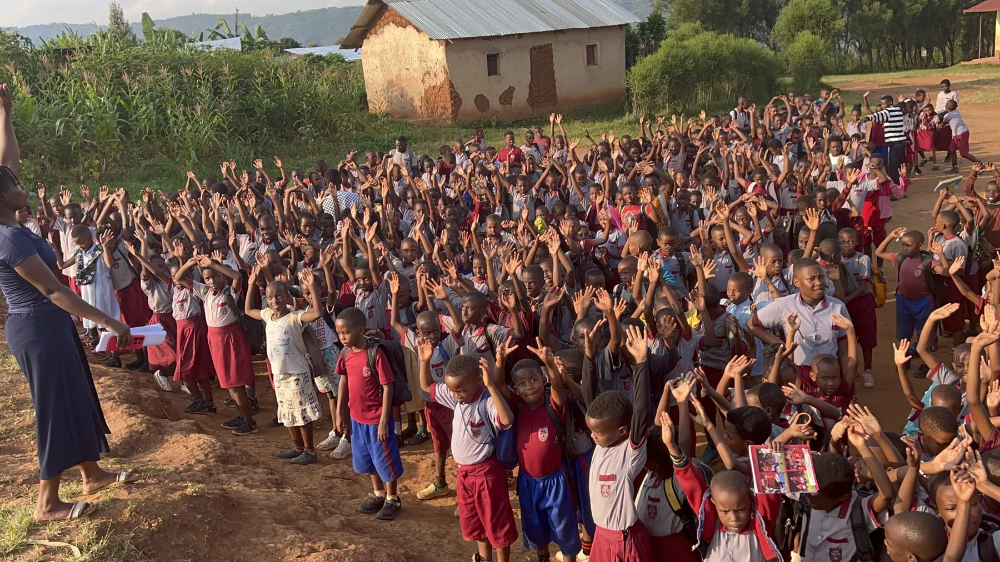
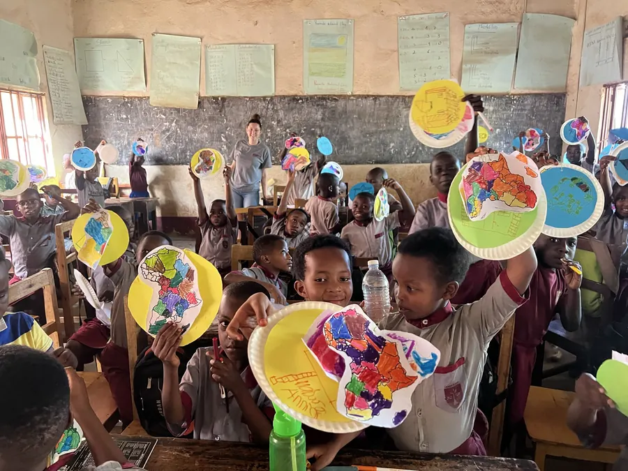
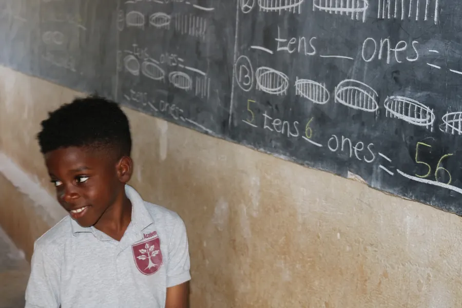
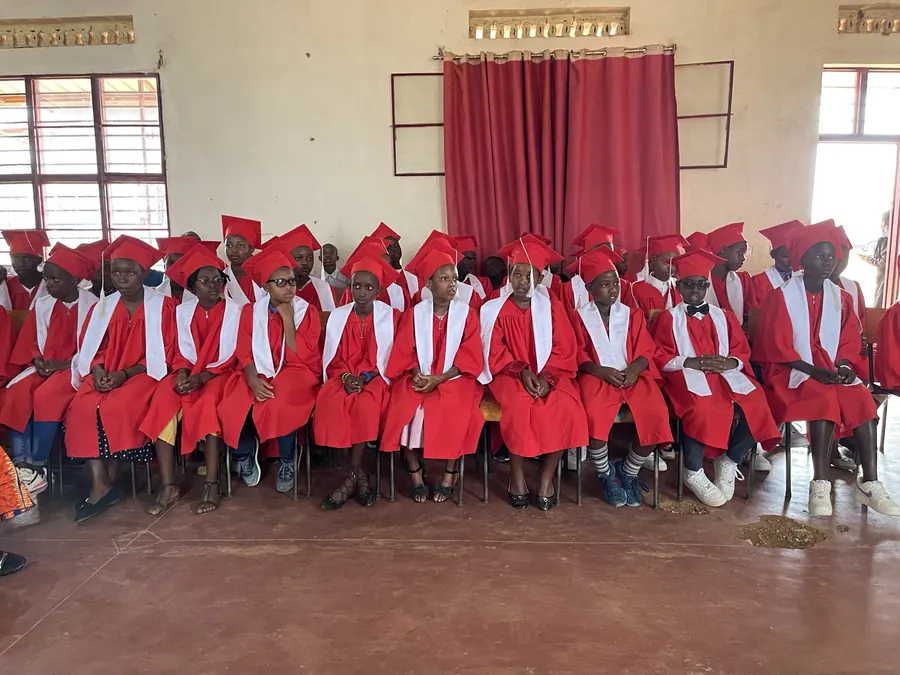

Two redesign directions for the Student Life page
Both are modelled on Berkeley Carroll's Student Life page and use its signature move: a full-bleed photo hero with poster-scale display type and a gold swash, a crimson pill nav slab for the sub-areas, and content carried in photo tiles with crimson caption blocks over a paper-dot texture. Rendered in Crimson's own palette and typefaces, not Berkeley Carroll's.
Both cover all eight offerings you listed — dance, music, karate, basketball, football/futsal, debate team, chess club, and after-school coaching (Revisions and Lesson Reviews) — with a written narrative for each, plus the faith, service, meals and transport layers that already exist on the live page.
Where Berkeley Carroll's page can't be copied straight
Their tiles are doorways — eight of them, each linking to a full sub-page (Arts, Athletics, Co-Curriculars…). The tile carries a photo and a name and nothing else, because the content lives one click away. Crimson has no sub-pages and shouldn't build eight of them for eight activities. So in both mockups the tile keeps the same silhouette but the narrative comes with it, on the page.
| Question | Mockup A | Mockup B |
|---|---|---|
| What organises the page? | What the activity is — three clusters: stage, court, table | When it happens — a clock, from the morning bus to the monthly walk into the village |
| How does an offering appear? | A photo tile with a crimson caption block, narrative below it | A row in a schedule board, then an editorial row with its photo |
| Answers first | “What can my child join?” | “What does my child actually do on a Tuesday?” |
| Closest to the reference | Yes — the tile grid is the reference's centrepiece | Shares the vocabulary, different spine |
What the school still has to fill in
I wrote the narratives from real material — your activity list, the staff directory (Eugene on karate, Robert coaching football, Elizabeth on chorus, Frederic on music), and the 2024–2025 Annual School Report (activities open from Primary 2, three assessments a term, repetition highest in P1–P3, the monthly P6 outreach, the food programme, the buses). I did not invent meeting days, participant counts, or coach names I don't have. Both mockups mark those gaps in-page with dashed gold “to confirm” chips rather than filling them with plausible fiction.
| Gap | Why it's blank |
|---|---|
| Day and time each activity meets | Not in the report, and inventing a timetable a parent might turn up for is the one error that costs trust |
| Current numbers per activity | The report counts choir, karate, soccer and acrobatics for 2024–25 — a different list from the one you gave me, so those figures no longer describe what's offered |
| Lead teacher for basketball, debate, chess | Not in the staff directory; the four names I did use are already on the site |
| Saturday fixture list | Framed in B with a slot for it |
One photo is a stand-in, and you should decide about it
There is no chess photograph in the asset folder. The closest thing is
IMG_0659.JPEG — children and adults around a carved board on a mat, which is
igisoro (the Rwandan mancala), not chess. I've used it for the Chess Club tile
because it is a real photo of real strategy play at Kagina, and I wrote the narrative to name that
tradition honestly rather than pass the picture off as a chess match. But it is a substitution, so
it's flagged in both mockups. Either caption it as igisoro, or send one photo of the chess club and
I'll swap it.
Images: what I found in the asset folder, and what it costs
I went through all 156 photographs in crimsonacademy-site/src/assets/ as contact
sheets rather than guessing from filenames, which turned up better material than the live page is
using — a goalkeeper mid-dive, four children in karate gi with yellow belts, the basketball court
with squads lined up, a boy at a microphone in front of the whole school, and a teacher at the
blackboard with hands up.
| Used for | Source file | Original | Optimised | |
|---|---|---|---|---|
 | Hero (both) | IMG_1042.JPEG | 1167 KB | 283 KB |
 | Football & Futsal | IMG_1060.JPEG | 1097 KB | 120 KB |
 | Karate | IMG_0972.JPEG | 1173 KB | 110 KB |
 | Basketball | IMG_1046.JPEG | 1045 KB | 93 KB |
 | Debate Team | IMG_2203.JPG | 2642 KB | 37 KB |
 | Chess Club (stand-in) | IMG_0659.JPEG | 1892 KB | 77 KB |
 | After-school coaching | IMG_2650.JPG | 2870 KB | 42 KB |
 | Dance | dancing.jpeg | 198 KB | 72 KB |
 | Music & Choir | IMG_8189.JPG | 3236 KB | 68 KB |
 | Tournament strip | tournament.jpeg | 5657 KB | 336 KB |
 | Assembly strip (B) | IMG_4978.JPG | 2301 KB | 346 KB |
 | Monthly outreach | students-outreach.jpg | 89 KB | 51 KB |
 | Meals | history-2019-food-programme.jpg | 134 KB | 45 KB |
 | Arts in the timetable (B) | IMG_4966.JPEG | 1003 KB | 102 KB |
 | Blackboard / buses (B) | james.jfif | 361 KB | 36 KB |
 | Spare — choir in the hall | IMG_5779.JPEG | 847 KB | 69 KB |
| Total | 25,719 KB | 1,894 KB |
A 93% reduction, measured not estimated. The originals are mostly untouched
camera files — tournament.jpeg alone is 5.7 MB at 5712×4284, which no phone on a
Rwandan network should ever be asked to download. Derivatives are in
content/student-life-mockups/img/ as 1800px (hero and strips) and 900px (tiles) WebP
at q78, ready to move into src/assets/ if a direction is adopted.
The Notice Board
The closest read of the Berkeley Carroll page. A poster hero over the team photo, the crimson slab nav, then the eight offerings as photo tiles with crimson caption blocks — grouped into On the Stage (dance, music), On the Court (karate, basketball, football & futsal) and At the Table (debate, chess, after-school coaching). Football and coaching get double-width tiles because they carry the most to say. Closes with a practicalities panel, faith & service, and health.
- Fastest to scan — a parent can see all eight in two screens
- The tile grid is the reference's actual signature
- Coaching sits at the same size as karate, on purpose
After Four
Same visual language, organised by time instead of type. The hero puts a clock beside the poster type — buses, devotions, lessons, meals, four o'clock, Saturdays, once a month — and the whole page follows it. The After Four station opens on a schedule board listing all ten sessions with grades, who leads them and where they happen; each then gets an editorial row with its photo. Saturdays and the monthly village walk become their own stations.
- Answers the question a parent actually asks: what happens after school?
- The schedule board is one table they can read and act on
- Makes the missing timetable data visible instead of hiding it
My lean: A, and not by a small margin. The reference page works because the tile grid does one job extremely well — it shows a parent, in a single screen, that this school has more going on than they expected. That is precisely Crimson's problem to solve: a rural school whose activity programme is far better than anyone assumes from the outside. B is smarter about the one thing A can't say (when any of it happens), but it front-loads a table with four “to confirm” cells in it — so B becomes the better page the moment the school sends the timetable, and the weaker one until then.